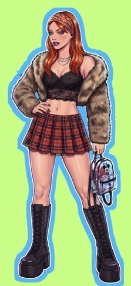
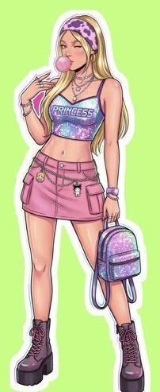

TEAM BRIEF
The technical plan for the shoot day: what we shoot, where, when and to which specs. Creative direction is given on set. Post-production and graphics are done by the client.






The technical plan for the shoot day: what we shoot, where, when and to which specs. Creative direction is given on set. Post-production and graphics are done by the client.


The same for every girl and every Issue
| Per girl (× 7) | Photos | Videos | Where |
|---|---|---|---|
| Putting it on · in motion | 2 × 7 = 14 | Arepa | |
| Cover portrait · close-up · full body day · full body night | 4 × 7 = 28 | Studio | |
| Per Issue (× 3) | |||
| Group: together · at the door with flash | 2 × 3 = 6 | Arepa | |
| Group video | 1 × 3 = 3 | Arepa | |
| Group cover | 1 × 3 = 3 | Studio | |
| Other | |||
| Product: each band alone | 7 | Studio | |
| Hero video, 60 s, everyone | 1 | Studio | |
| TOTAL | 44 | 18 |
Not in the count: every unselected frame, delivered too. The client uses them for Back Issue, the Photo Booth, the Valentine’s second frame and the weekly Stories. 21 of the 60 posts are made by Linh (or an influencer), not by us.
4 models all day · one of them is the make-up artist
| Girl | Headband | Issue | Model |
|---|---|---|---|
| IRIS | Purple, lime edge | Issue 01 | MODEL 4 (also MUA) |
| NAÏMA | Leopard | Issue 01 | MODEL 1 |
| JADE | Navy, electric blue stripe | Issue 02 | MODEL 2 |
| RUBY | Orange and purple zebra | Issue 02 | MODEL 3 |
| STEVIE | Hot pink, turquoise edge | Issue 03 | MODEL 1 |
| LOLA | Pink, cow print | Issue 03 | MODEL 2 |
| RAFA | Yellow, lilac edge | Issue 03 | MODEL 3 |
Night looks · videos and group photos · until 12:00
| Time | MUA (Model 4) | Photo | Video |
|---|---|---|---|
| 07:00 | Model 1 → STEVIE · night look | Light the store spots: mirror, rails, door | Set up · test the walk-in corridor |
| 07:40 | Model 2 → LOLA | ST-V1 · ST-V2 | |
| 08:20 | Model 3 → RAFA | LO-V1 · LO-V2 | |
| 09:00 | Model 4 → IRIS (herself) | RA-V1 · RA-V2 | |
| 09:35 | Touch-ups on the trio between takes | I03-G1 · I03-G2 | I03-V |
| 10:05 | Model 1 → NAÏMA (hair: curls → updo) | IR-V1 · IR-V2 | |
| 10:25 | Model 2 → JADE (straight → flat-ironed) | NA-V1 · NA-V2 | |
| 10:45 | Model 3 → RUBY (waves → messy waves) | I01-G1 · I01-G2 | I01-V |
| 11:05 | Touch-ups | JA-V1 · JA-V2 | |
| 11:25 | Touch-ups | RU-V1 · RU-V2 | |
| 11:40 | Touch-ups | I02-G1 · I02-G2 | I02-V |
| 12:00 | WRAP AREPA · pack · move to the studio · lunch | ||
Everything that goes to the graphic designer · from 13:30
| Time | MUA (Model 4) | Photo | Video |
|---|---|---|---|
| 13:30 | Iris, Naïma, Jade, Ruby arrive in their night look | NA-FBN · JA-FBN · RU-FBN · IR-FBN (tripod locked, 5 min each) | Hero: segment Naïma |
| 13:50 | Day look: Naïma | P-IR · P-NA · P-JA · P-RU (product while they change) | Hero: segment Jade |
| 14:00 | Day look: Jade | NA-FBD · NA-C · NA-CU | Hero: segment Ruby |
| 14:20 | Day look: Ruby | JA-FBD · JA-C · JA-CU | Hero: segment Iris |
| 14:40 | Day look: Iris (herself) | RU-FBD · RU-C · RU-CU | |
| 15:00 | Touch-ups | IR-FBD · IR-C · IR-CU | Hero: segment Iris + Naïma |
| 15:20 | Model 1 → STEVIE · night look | I01-COV · I02-COV | Hero: segment Jade + Ruby |
| 15:40 | Model 2 → LOLA | P-ST · P-LO · P-RA | Hero: segment Stevie |
| 16:00 | Model 3 → RAFA | ST-FBN → (Stevie changes to day) · LO-FBN | Hero: segment Lola |
| 16:20 | Day look checks | ST-FBD · ST-C · ST-CU · RA-FBN | Hero: segment Rafa |
| 16:40 | Day look checks | LO-FBD · LO-C · LO-CU | |
| 17:00 | Touch-ups | RA-FBD · RA-C · RA-CU | Prepare the hero group shot |
| 17:20 | Touch-ups | I03-COV | |
| 17:35 | All four on set | HERO · all four together | |
| 18:15 | WRAP · double backup before anyone leaves | ||
From the client: “Vertical video for Reels and TikTok. Short clips, 3 to 10 seconds, done again and again.”
So every frame drops straight into the client’s templates
44 photos + 18 videos · code, what, spec
| Code | Type | What | Spec |
|---|---|---|---|
| IR-V1 | VIDEO | IRIS · putting it on | Band in hand → on → hair fixed → look to lens. 10–15 s per take, usable 3–10 s. |
| IR-V2 | VIDEO | IRIS · in motion, full body | Full body always in frame, band visible throughout. 10–15 s per take. |
| NA-V1 | VIDEO | NAÏMA · putting it on | Band in hand → on → hair fixed → look to lens. 10–15 s per take, usable 3–10 s. |
| NA-V2 | VIDEO | NAÏMA · in motion, full body | Full body always in frame, band visible throughout. 10–15 s per take. |
| JA-V1 | VIDEO | JADE · putting it on | Band in hand → on → hair fixed → look to lens. 10–15 s per take, usable 3–10 s. |
| JA-V2 | VIDEO | JADE · in motion, full body | Full body always in frame, band visible throughout. 10–15 s per take. |
| RU-V1 | VIDEO | RUBY · putting it on | Band in hand → on → hair fixed → look to lens. 10–15 s per take, usable 3–10 s. |
| RU-V2 | VIDEO | RUBY · in motion, full body | Full body always in frame, band visible throughout. 10–15 s per take. |
| ST-V1 | VIDEO | STEVIE · putting it on | Band in hand → on → hair fixed → look to lens. 10–15 s per take, usable 3–10 s. |
| ST-V2 | VIDEO | STEVIE · in motion, full body | Full body always in frame, band visible throughout. 10–15 s per take. |
| LO-V1 | VIDEO | LOLA · putting it on | Band in hand → on → hair fixed → look to lens. 10–15 s per take, usable 3–10 s. |
| LO-V2 | VIDEO | LOLA · in motion, full body | Full body always in frame, band visible throughout. 10–15 s per take. |
| RA-V1 | VIDEO | RAFA · putting it on | Band in hand → on → hair fixed → look to lens. 10–15 s per take, usable 3–10 s. |
| RA-V2 | VIDEO | RAFA · in motion, full body | Full body always in frame, band visible throughout. 10–15 s per take. |
| I01-G1 | PHOTO | Iris + Naïma · together | Vertical 4:5. Every band fully visible, bands at different heights. |
| I01-G2 | PHOTO | Iris + Naïma · at the door, direct flash | Vertical 4:5. Direct flash. Every band fully visible. |
| I02-G1 | PHOTO | Jade + Ruby · together | Vertical 4:5. Every band fully visible, bands at different heights. |
| I02-G2 | PHOTO | Jade + Ruby · at the door, direct flash | Vertical 4:5. Direct flash. Every band fully visible. |
| I03-G1 | PHOTO | Stevie + Lola + Rafa · together | Vertical 4:5. Every band fully visible, bands at different heights. |
| I03-G2 | PHOTO | Stevie + Lola + Rafa · at the door, direct flash | Vertical 4:5. Direct flash. Every band fully visible. |
| I01-V | VIDEO | Iris + Naïma · putting it on together | For the Put It On reel (7 Feb): band in hand → on → hair → look change by simple cut. A short section each + one together. |
| I02-V | VIDEO | Jade + Ruby · getting ready at the mirror | Reel 8–12 s (7 Mar). Jade eyeliner, Ruby earrings + jacket, ends with both looking into the mirror. Bands visible throughout. |
| I03-V | VIDEO | Stevie + Lola + Rafa · the walk-in | Reel 6–8 s (6 Apr). Corridor or plain wall, three walks towards the camera → each adjusts her band → close shared portrait. |
| Code | Type | What | Spec |
|---|---|---|---|
| IR-FBN | PHOTO | IRIS · full body, night look | Tripod locked, floor taped. Same position as -FBD (Style File). |
| IR-FBD | PHOTO | IRIS · full body, day look | Same camera position as -FBN. Head to toe, feet in, outline clear for cut-out. |
| IR-C | PHOTO | IRIS · cover portrait | Head + shoulders, into the lens, 20–25% space above the head for the masthead. |
| IR-CU | PHOTO | IRIS · close-up on the band | Band sharp. Shoot several angles; one is the pick, the rest go to the client. |
| NA-FBN | PHOTO | NAÏMA · full body, night look | Tripod locked, floor taped. Same position as -FBD (Style File). |
| NA-FBD | PHOTO | NAÏMA · full body, day look | Same camera position as -FBN. Head to toe, feet in, outline clear for cut-out. |
| NA-C | PHOTO | NAÏMA · cover portrait | Head + shoulders, into the lens, 20–25% space above the head for the masthead. |
| NA-CU | PHOTO | NAÏMA · close-up on the band | Band sharp. Shoot several angles; one is the pick, the rest go to the client. |
| JA-FBN | PHOTO | JADE · full body, night look | Tripod locked, floor taped. Same position as -FBD (Style File). |
| JA-FBD | PHOTO | JADE · full body, day look | Same camera position as -FBN. Head to toe, feet in, outline clear for cut-out. |
| JA-C | PHOTO | JADE · cover portrait | Head + shoulders, into the lens, 20–25% space above the head for the masthead. |
| JA-CU | PHOTO | JADE · close-up on the band | Band sharp. Shoot several angles; one is the pick, the rest go to the client. |
| RU-FBN | PHOTO | RUBY · full body, night look | Tripod locked, floor taped. Same position as -FBD (Style File). |
| RU-FBD | PHOTO | RUBY · full body, day look | Same camera position as -FBN. Head to toe, feet in, outline clear for cut-out. |
| RU-C | PHOTO | RUBY · cover portrait | Head + shoulders, into the lens, 20–25% space above the head for the masthead. |
| RU-CU | PHOTO | RUBY · close-up on the band | Band sharp. Shoot several angles; one is the pick, the rest go to the client. |
| ST-FBN | PHOTO | STEVIE · full body, night look | Tripod locked, floor taped. Same position as -FBD (Style File). |
| ST-FBD | PHOTO | STEVIE · full body, day look | Same camera position as -FBN. Head to toe, feet in, outline clear for cut-out. |
| ST-C | PHOTO | STEVIE · cover portrait | Head + shoulders, into the lens, 20–25% space above the head for the masthead. |
| ST-CU | PHOTO | STEVIE · close-up on the band | Band sharp. Shoot several angles; one is the pick, the rest go to the client. |
| LO-FBN | PHOTO | LOLA · full body, night look | Tripod locked, floor taped. Same position as -FBD (Style File). |
| LO-FBD | PHOTO | LOLA · full body, day look | Same camera position as -FBN. Head to toe, feet in, outline clear for cut-out. |
| LO-C | PHOTO | LOLA · cover portrait | Head + shoulders, into the lens, 20–25% space above the head for the masthead. |
| LO-CU | PHOTO | LOLA · close-up on the band | Band sharp. Shoot several angles; one is the pick, the rest go to the client. |
| RA-FBN | PHOTO | RAFA · full body, night look | Tripod locked, floor taped. Same position as -FBD (Style File). |
| RA-FBD | PHOTO | RAFA · full body, day look | Same camera position as -FBN. Head to toe, feet in, outline clear for cut-out. |
| RA-C | PHOTO | RAFA · cover portrait | Head + shoulders, into the lens, 20–25% space above the head for the masthead. |
| RA-CU | PHOTO | RAFA · close-up on the band | Band sharp. Shoot several angles; one is the pick, the rest go to the client. |
| I01-COV | PHOTO | Iris + Naïma · group cover | Same headroom rule as -C. Bands at different heights, none covered. |
| I02-COV | PHOTO | Jade + Ruby · group cover | Same headroom rule as -C. Bands at different heights, none covered. |
| I03-COV | PHOTO | Stevie + Lola + Rafa · group cover | Same headroom rule as -C. Bands at different heights, none covered. |
| P-IR | PHOTO | IRIS band · product | Band alone, logo visible, on white and on its Issue colour. |
| P-NA | PHOTO | NAÏMA band · product | Band alone, logo visible, on white and on its Issue colour. |
| P-JA | PHOTO | JADE band · product | Band alone, logo visible, on white and on its Issue colour. |
| P-RU | PHOTO | RUBY band · product | Band alone, logo visible, on white and on its Issue colour. |
| P-ST | PHOTO | STEVIE band · product | Band alone, logo visible, on white and on its Issue colour. |
| P-LO | PHOTO | LOLA band · product | Band alone, logo visible, on white and on its Issue colour. |
| P-RA | PHOTO | RAFA band · product | Band alone, logo visible, on white and on its Issue colour. |
| HERO | VIDEO | Hero video · everyone | 60 s final edit, vertical 9:16. Shoot segments per girl + all four together. |
60 posts · where each one gets its material
Posts are carousels and reels: one post uses several shots, and the same shot comes back in later posts. Grey rows are made by Linh.
| Date | Post | Material |
|---|---|---|
| 5 Jan | New Document | Linh |
| 8 Jan | Save as NYA | IR-CU crop |
| 10 Jan | Our Type | Linh |
| 12 Jan | Design Notes | Linh |
| 15 Jan | The Name | Linh |
| 17 Jan | A Small Update | Linh |
| 19 Jan | The Introduction Cover | IR-CU · NA-CU crops |
| 22 Jan | The First Pair | P-IR · P-NA · IR-CU · NA-CU |
| 24 Jan | The List | Linh |
| 26 Jan | Making Issue 001 | Linh (BTS from our day) |
| 29 Jan | Editor’s Note | Linh |
| 31 Jan | Next Issue | IR-CU · NA-CU crops |
| 1 Feb | The Cover | I01-COV · IR-C · NA-C |
| 3 Feb | Meet Iris | IR-C · P-IR · IR-CU · IR-FBD |
| 5 Feb | Meet Naïma | NA-C · P-NA · NA-CU · NA-FBD |
| 7 Feb | Put It On | I01-V · IR-V1 · NA-V1 |
| 8 Feb | Editor’s Note | Linh |
| 10 Feb | Iris After Hours | Linh |
| 12 Feb | Naïma’s Screen Test | NA-FBN + unselected frames |
| 14 Feb | The Valentine’s Page | I01-G1 + unselected frames |
| 17 Feb | The Wardrobe Computer | IR-FBD · NA-FBD · P-IR · P-NA |
| 19 Feb | Design Notes | Linh |
| 21 Feb | The Style File | IR-FBD · IR-FBN · NA-FBD · NA-FBN · CU details |
| 23 Feb | Back Issue | I01-G2 + unselected frames |
| 25 Feb | Open Attachment | Linh |
| 27 Feb | Next Issue Hint | P-JA · P-RU crops |
| 28 Feb | Next Issue | P-JA · P-RU · I01-COV |
| 1 Mar | The Cover | I02-COV · JA-C · RU-C |
| 3 Mar | Meet Jade | JA-C · P-JA · JA-CU · JA-FBD |
| 5 Mar | Meet Ruby | RU-C · P-RU · RU-CU · RU-FBD |
| 7 Mar | Getting Ready | I02-V · JA-V1 · RU-V1 |
| 8 Mar | Editor’s Note | Linh |
| 10 Mar | Jade’s Top Drawer | Linh |
| 12 Mar | Ruby’s Screen Test | RU-FBN + unselected frames |
| 14 Mar | Jade’s Voice Note | JA-CU · JA-V1 |
| 16 Mar | The Soundtrack | Linh (with JA-C · RU-C · P) |
| 18 Mar | Design Notes | Linh |
| 20 Mar | The Style File | JA-FBD · JA-FBN · RU-FBD · RU-FBN |
| 23 Mar | Open Chat | Linh (Jade mirror selfie on our day) |
| 25 Mar | Back Issue | I02-G1 + unselected frames |
| 27 Mar | Next Issue Hint | P-ST · P-LO · P-RA crops |
| 29 Mar | Next Issue | P-ST · P-LO · P-RA · CU crops |
| 30 Mar | The Cover | I03-COV · ST-C · LO-C · RA-C |
| 31 Mar | Meet Stevie | ST-C · P-ST · ST-CU · ST-FBD |
| 2 Apr | Meet Lola | LO-C · P-LO · LO-CU · LO-FBD |
| 4 Apr | Meet Rafa | RA-C · P-RA · RA-CU · RA-FBD |
| 6 Apr | The Walk-In | I03-V |
| 8 Apr | Editor’s Note | Linh |
| 10 Apr | Lola’s Little Purchases | Linh |
| 11 Apr | The Phone Call | ST-C · LO-C · RA-C in the split-screen template |
| 13 Apr | Rafa In Motion | RA-V1 · RA-V2 |
| 15 Apr | The Paparazzi Page | I03-G2 + unselected frames |
| 17 Apr | Design Notes | Linh |
| 19 Apr | Stevie’s Voice Note | ST-CU · ST-V2 |
| 21 Apr | The Style File | ST · LO · RA -FBD + -FBN |
| 23 Apr | The Soundtrack | ST-C · LO-C · RA-C · P |
| 25 Apr | NYA’s Angels | I03-G1 |
| 27 Apr | The Morning After | Linh |
| 29 Apr | The Photo Booth | I03 unselected frames |
| 30 Apr | The Complete Collection | I03-COV · all seven -C · P |
We stop at the raw files
Before the day